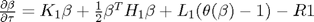
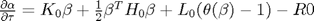
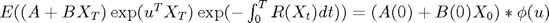
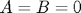
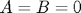

CFH Toolbox
This toolbox implements the approach of Duffie/Pan/Singleton (2000), who show that we can compute the characteristic function (and hence recover option prices, pdfs, bond prices), for a very wide class of affine jump-diffusion models. We combine this approach with the FFT option pricing methods of Carr/Madan (1999) and Chourdakis (2005).
Author: matthias.held@web.de
Contents
Available functions
- cf2bond Compute bond prices from AJD dynamics
- cf2bondEx Compute extended bond pricing transforms from AJD process
- cf2call Estimate call option prices from characteristic function
- cf2gaby Compute conditional expectations from characteristic function
- cf2pdf Transform characteristic function into the corresponding probability density function
- cfaffine Yields a characteristic function for a given set of Affine-Jump-Diffusion (AJD) dynamics
- cfjump A library of commonly encountered jump transforms
- cflib A library of commonly encountered characteristic functions
- cfneutralize Returns the risk-neutralized drift components from given AJD dynamics coefficients.
Theory
Let  be an affine jump-diffusion process
be an affine jump-diffusion process

where all parameters are affine in the state
 , the drift
, the drift , the variance
, the variance , the interest rate process
, the interest rate process , the jump intensity of
, the jump intensity of 
 , the moment generating function of the jump distribution of
, the moment generating function of the jump distribution of  .
.
For this class of processes, the risk neutral expectation

can be computed as
 ,
,
where  and
and  solve the Ricatti equations:
solve the Ricatti equations:
 
subject to the condition  and
and  .
.
The extended transform theorem furthermore recovers the expectation

The function cfaffine recovers the risk neutral expectation for arbitrary  and , whereas the function cf2bond directly evaluates the resulting characteristic function at
and , whereas the function cf2bond directly evaluates the resulting characteristic function at  , thereby recovering bond prices.
, thereby recovering bond prices.
cf2bondex directly evaluates the extended transform at , thus directly recovering risk neutral expectations of linear combinations of process variables.